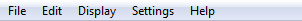

Element editor Menu bar¶
The framework and widget toolkit Qt allows the design of drop-down menus. The drop-down menus are a characteristic graphical control element from the desktop applications. Each of the drop-down menus contains a number of options to initiate an action. The Menu bar is placed at top from the main windows. The figure bellow shows how the menu bar from QElectroTech looks.

Figure: QElectroTech Element editor Menu bar
As is showed at the figure, QElectroTech element editor bar contains the Menus File, Edit,
Display, Settings and Help.
| Menu | Options | Function | Keyboard shortcut | Toolbar icon |
|---|---|---|---|---|
| File | New | Creates a new Element | Ctrl + n |
|
| Open | Opens an existing element from a library | Ctrl + o |
||
| Open from a file | Opens an existing element from the disk | Ctrl + Shift + o |
||
| Starting the DXF converter pluging | ||||
| Recently opened | Open an element from history (recently opened files) | |||
| Save | Saves the current Element changes (overwrites) | Ctrl + s |
 |
|
| Save as | Saves the Element as a new element from a library |  |
||
| Save to a file | Saves the Element as a different file on disk | Ctrl + Shift + s |
||
| Reload | Reloads the opened element (all changes which are not saved are lost) | f5 |
||
| Quit | Quits QElectroTech Element editor | Ctrl + q/ Alt + F4 |
| Menu | Options | Function | Keyboard shortcut | Toolbar icon |
|---|---|---|---|---|
| Edit | Undo | Undo the last action at the element editor | Ctrl + z |
|
| Redo | Recovers the last undo action at the element editor | Ctrl + y |
||
| Select All | Selects all parts from the element | Ctrl + a |
||
| Select none | Unselects all current selected parts in the element | Ctrl + Shift + a |
||
| Invert selection | Inverts selection of element parts | Ctrl + i |
||
| Cut | Equivalent to copy + delete element part/s | Ctrl + x |
||
| Copy | Copies the selected element part/s | Ctrl + c |
||
| Paste | Pastes the parts from last copy or cut | Ctrl + v |
||
| Paste in the area | Pastes the object from last copy or cut in a selected area | Ctrl + Shift + v |
||
| Paste from | ||||
| Delete | Deletes the selected element/s part/s | Del |
 |
|
| Edit name and information of the element | Displays the element Edit names PopUp window | Ctrl + y |
||
| Edit author information | Displays the element Edit author informaton PopUp window | |||
| Edit element properties | Displays the element property PopUp window | |||
| Bring to front | Selected element part sent at top | Ctrl + Shift + Home |
 |
|
| Raise | Selected element part sent one level up | Ctrl + Shift + Up |
 |
|
| Lower | Selected element part sent one level down | Ctrl + Shift + Down |
 |
|
| Send backwards | Selected element part sent at bottom | ``Ctrl + Shift + End` |  |
| Menu | Options | Function | Keyboard shortcut | Toolbar icon |
|---|---|---|---|---|
| Display | Zoom In | Magnify the Element symbol for a closer view | Ctrl + + |
|
| Zoom Out | Reduce magnification of the Element symbol; develops a distant view of the Element | Ctrl + - |
||
| Fit in view | Define zoom level to fit the Element symbol at workspace | Ctrl + 9 |
||
| Reset zoom | Reset zoom levels to default value (zoom level just less than that of fit in view) | Ctrl + 0 |
| Menu | Options | Function | Keyboard shortcut | Notes | Toolbar icon |
|---|---|---|---|---|---|
| Settings | Display | Display or hide toolbars and panels | Hides or shows elements panel, tool bar etc., | ||
| Full screen mode | Spreads the window to fill the screen | Ctrl + Shift + f |
Entire screen gets occupied by the window | ||
| Configure QElectroTech | Display QElectroTech configure PopUp window |
| Menu | Options | Function | Keyboard shortcut | Toolbar icon |
|---|---|---|---|---|
| Help | What’s This? | Enquires main menu options | Shift + f1 |
|
| About QElectroTech | Displays information about authors, contributors, translators and Licensing | |||
| Online manual | Opens the explorer and redirects to the official QElectroTech documentation | f1 |
||
| Youtube channel | Opens the explorer and redirects to the official QElectroTech Youtube channel | |||
| Download a new version (dev) | Opens the explorer and redirects to the official QElectroTech download link | |||
| Support the project with a donation | Opens the explorer and redirects to the official QElectroTech donation paypal account | |||
| About Qt | Displays information about Qt, a C++ toolkit for cross platform applications |